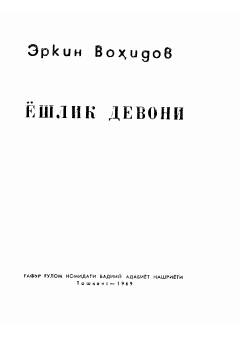

YDErkin Vohidovning aruz vaznida yozilgan mumtoz ruhdagi she'rlar to'plami.
Erkin Vohidovning ushbu to'plamiga muallifning yoshlik yillarida aruz vaznida yozgan she'rlari kiritilgan. Kitobda mumtoz aruz vaznini hozirgi zamon she'riyati uslubiga yaqinlashtirish va g'azal janrining go'zalligini tarannum etish o'z aksini topgan.